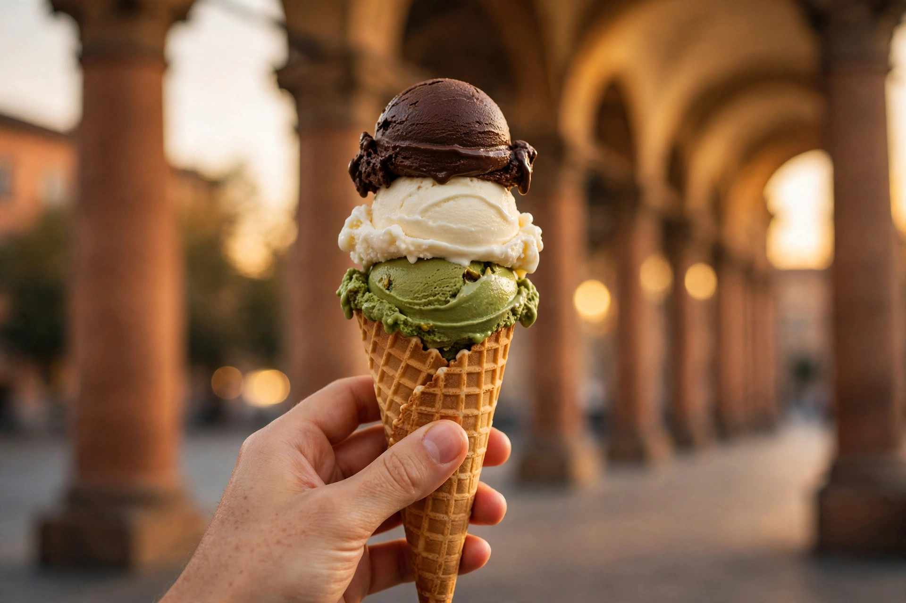
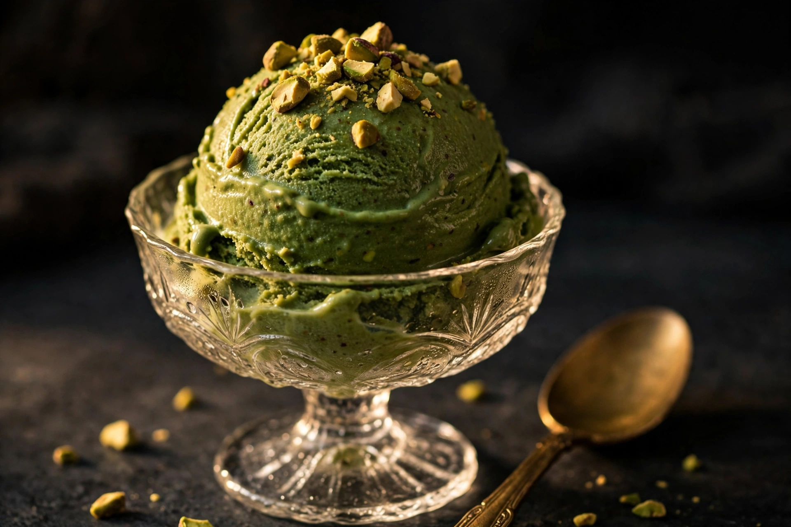
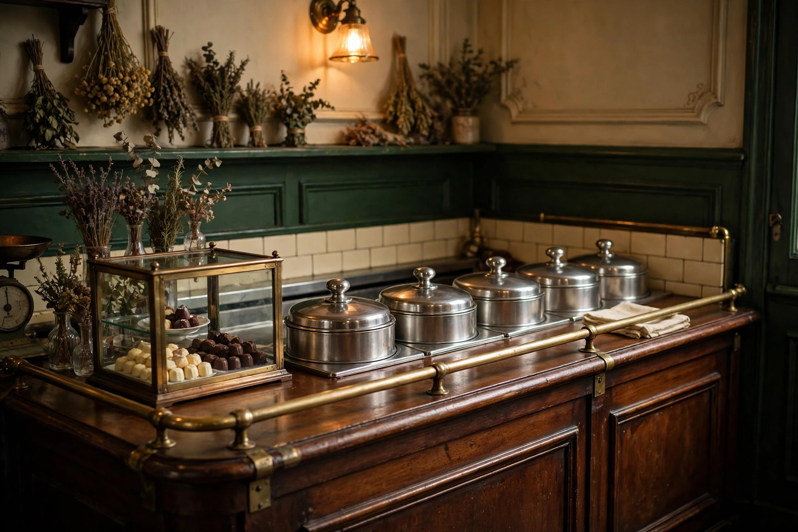
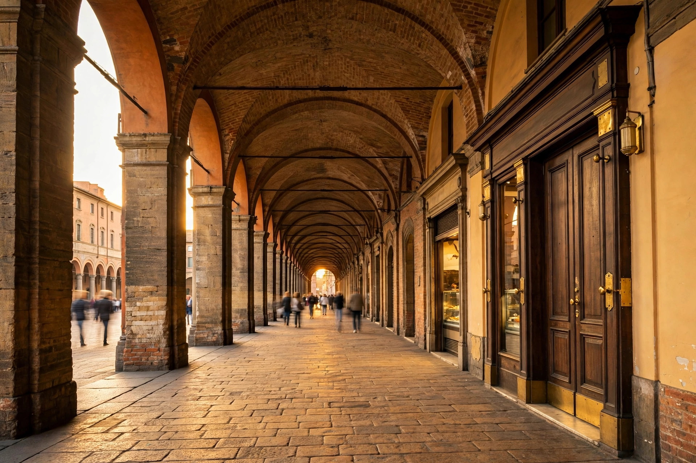
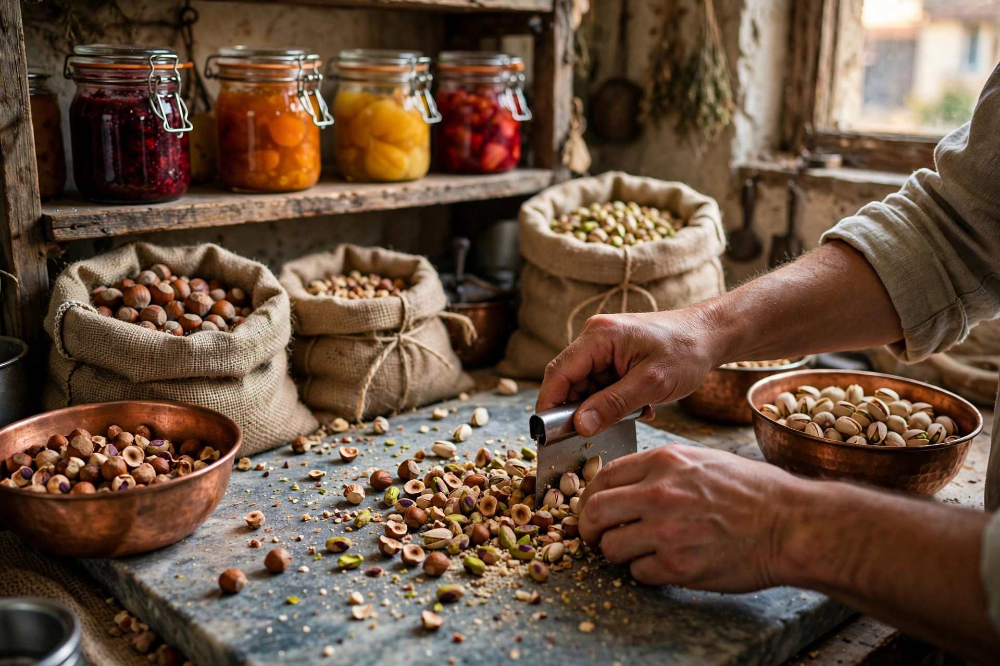
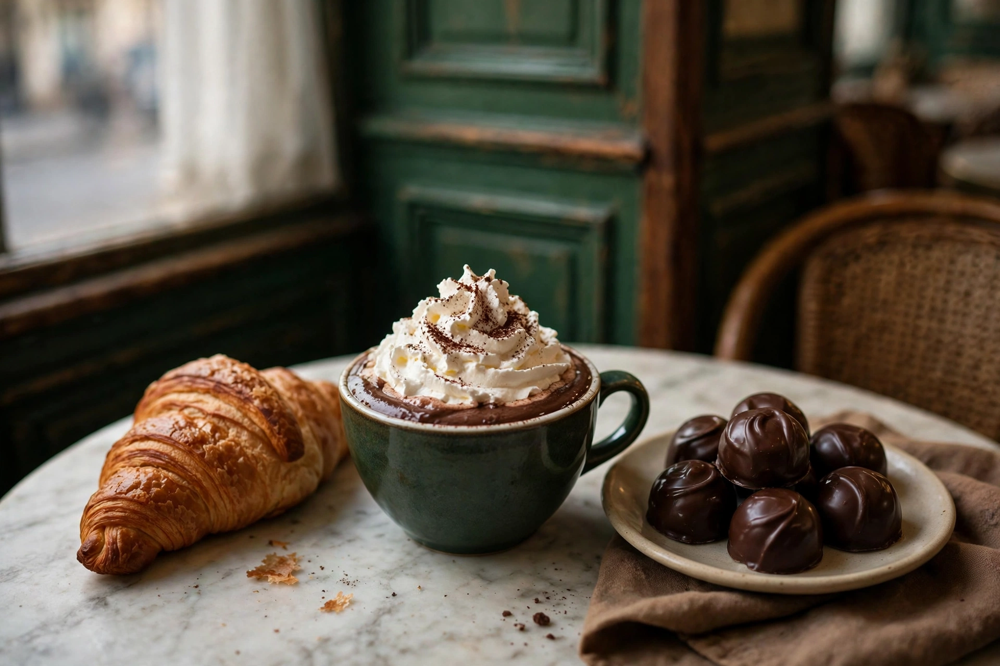

Pistacchio salato del Bosforo
Pistacchi turchi e una punta di sale: il gusto da cui molti giudicano la casa, e quello da cui partire.
Il simbolo della casaTre Coni: Guida Gelaterie d'Italia del Gambero Rosso
Oggi in vetrina: pistacchio salato del Bosforo
Dal 2006, la famiglia Cavallari fa gelato e cioccolato artigianali in un ambiente raccolto dal gusto retrò: materie prime scelte una a una, combinazioni sempre nuove e il sapore autentico di ogni ingrediente. Sotto i portici di via Santo Stefano, a pochi passi da Piazza Santo Stefano.

La vetrina cambia con le stagioni e con il mese: questi sono i gusti per cui Bologna fa la fila: un'istantanea del banco, non un menù fisso. Chiedi un assaggio: lo staff consiglia volentieri e fa provare i gusti nuovi.

Pistacchi turchi e una punta di sale: il gusto da cui molti giudicano la casa, e quello da cui partire.
Il simbolo della casaFondente da cru del Venezuela: profondo, pulito, mai stucchevole.
Crema di latte con acqua di fiori d'arancio amaro di Vallebona, mandorle e pistacchi.
Mascarpone e pinoli: velluto e croccante in un solo cucchiaio.
La preferita delle guideLa crema dedicata alla piazza delle Sette Chiese, a pochi passi da qui.
Biscotto alla cannella e caramello salato, sciolti in crema.
Il budino classico, in versione gelato: morbido e profumato.
Nocciole di Cravanzana, tostate e raffinate nel Laboratorio della casa.
I gusti ruotano: quelli di frutta seguono la stagione: in primavera compaiono fragola e melissa e la nespola. L'elenco aggiornato è sempre in vetrina e su Instagram.




Scorri per esplorare
Dicono di noi
«…bisogna aver un po' di pazienza, perché c'è sempre la fila.»Travelnostop, sulle gelaterie Tre Coni d'Italia
A dieci anni dall'apertura è nato, a pochi passi dalla cremeria, il Laboratorio Cavallari: uno spazio di lavoro completamente a vista. È il cuore produttivo della casa: quello che non si vede in vetrina, qui si vede fare.
Pistacchi e nocciole vengono tostati e raffinati qui: la base dei gusti più amati nasce nel Laboratorio.
La frutta diventa confettura e gelatina in casa: per variegati, sorbetti e colazioni.
Dal Laboratorio escono anche focacce e croissant, pensati per accompagnare il gelato.
La cremeria è anche cioccolateria e piccola pasticceria: accanto ai coni, una vetrina di cose buone da portare via.
Praline artigianali e cioccolata calda con panna.
La piccola pasticceria della casa: macaron e torte per chiudere, o cominciare, in dolcezza.
La parte fresca della vetrina: granite e sorbetti di frutta di stagione.
Confetture di frutta fresca e, a Natale, il panettone artigianale.
Via Santo Stefano 70/c
40125 Bologna
Sotto i portici, a pochi passi da Piazza Santo Stefano e dalle Sette Chiese.
| Lunedì | Chiuso |
|---|---|
| Martedì | 11:00-22:30 |
| Mercoledì | 11:00-22:30 |
| Giovedì | 11:00-22:30 |
| Venerdì | 11:00-22:30 |
| Sabato | 11:00-22:30 |
| Domenica | 11:00-22:30 |
Orari indicativi: le schede online non concordano del tutto: Google indica mercoledì-domenica 12:00-22:00. Per l'orario di oggi, guarda Instagram o chiamaci: 051 227045.
Nel fine settimana si forma la fila davanti alla porta: è il rito della casa: la pazienza viene ripagata al primo cucchiaio.